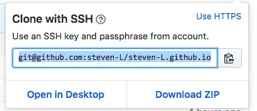
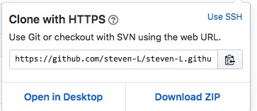
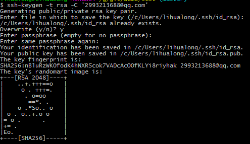

3代码提交
git 对于远程仓库的提交可以使用https和ssh
区别在于：
使用https url克隆对初学者来说会比较方便，复制https url然后到git Bash里面直接用clone命令克隆到本地就好了，但是每次fetch和push代码都需要输入账号和密码，这也是https方式的麻烦之处。而使用SSH url克隆却需要在克隆之前先配置和添加好SSH key，因此，如果你想要使用SSH url克隆的话，你必须是这个项目的拥有者。否则你是无法添加SSH key的，另外ssh默认是每次fetch和push代码都不需要输入账号和密码，如果你想要每次都输入账号密码才能进行fetch和push也可以另外进行设置
使用如下命令查看当前提交方式
git remote -v
在github里可以找到两种方式的地址


修改为https:
git remote set-url origin https://github.com/steven-L/steven-L.github.io.git
修改为ssh:
git remote set-url origin git@github.com:steven-L/steven-L.github.io.git
使用SSH key
1. 创建SSH Key。
在C盘user目录下，看看有没有.ssh目录，如果有，再看看这个目录下有没有id_rsa和id_rsa.pub这两个文件，如果已经有了，可直接跳到下一步。如果没有，打开Shell（Windows下打开Git Bash），创建SSH Key：
$ ssh-keygen -t rsa -C "你的邮箱"
-t指定密钥类型，默认是rsa，可以省略。
-C设置注释文字，比如邮箱。
-f指定密钥文件存储文件名。

2. 复制ssh keys
登陆GitHub，打开 “settings”，“SSH and GPG Keys”页面，点击 按钮添加ssh key ；
填上任意Title，在Key文本框里粘贴id_rsa.pub文件的内容，最后确认。
3. 关联远程仓库
在本地创建一个仓库 git init
$ git remote add origin git@github.com:你自己的GitHub账户名/仓库名.git
下一步，就可以把本地库的所有内容推送到远程库上